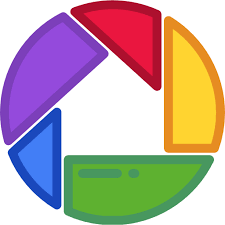

inkscape
inkscapepicasa
-це програма для редагування фото.Можна змінити стиль фото, задати класні ефекти і таке інше і в цій програмі легше задавати ефекти ніж у фотошоп. makehuman-програма для створення 3d людей.blender-програма для створення 3d моделів,персонажів,рельефі і можна додавти спецефекти і анімацій.
sweethome-це програма для створення 3д приміщень.sketchup-програма для створення 3д моделів з нуля.
pixrl-це сайт для редагування фото як у фотошоп.Цей сайт був створений для тих у кого нема фотошопа